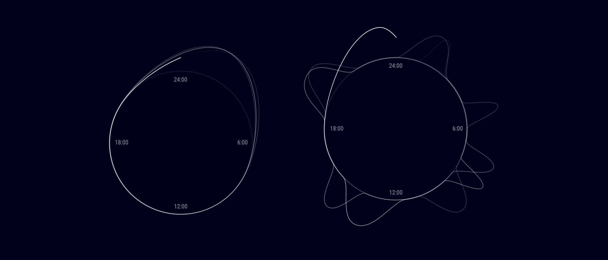

Im Takt – intakt
arrow_outward
Welche Auswirkungen hat Schlaf auf die neuronale Gesundheit? Die folgende Website nutzt den 24-Stunden-Takt, um das regulierende zirkadiane System zu visualisieren. Zunächst werden der Schlafrhythmus und die Hormonausschüttung, anschließend die Prozesse im SCN betrachtet. Ein Slider ermöglicht es interaktiv, den Wandel zwischen einem gesunden und einem erkrankten Zustand zu explorieren. Diese sensibilisieren dafür, dass Schlafstörungen Frühindikatoren für neurodegenerative Erkrankungen sein können.
Mialena Kneschke, Adrian Herzig